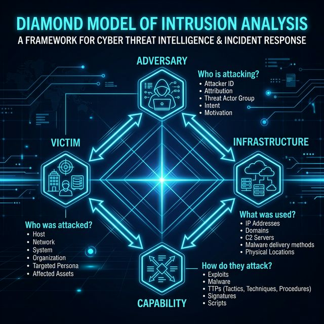

El Modelo Diamante es una metodología avanzada para la caracterización de eventos de intrusión cibernética. Su estructura permite a los analistas de seguridad establecer relaciones entre los adversarios, sus capacidades técnicas, la infraestructura utilizada y las víctimas impactadas. Este modelo es vital para entender no solo el "qué" del ataque, sino el "cómo" y el "por qué".

A continuación se describen los componentes teóricos fundamentales con sus respectivos ejemplos prácticos extraídos de la metodología de análisis:
| Elemento | Descripción | Ejemplo Práctico |
|---|---|---|
| Adversario | El actor o grupo responsable de llevar a cabo el ataque. | Un grupo de ciberdelincuencia o una APT (Amenaza Persistente Avanzada). |
| Capacidad | Herramientas, técnicas, software o conocimientos utilizados por el atacante. | Un malware tipo troyano (RAT) o un exploit de día cero. |
| Infraestructura | Los recursos físicos o lógicos que permiten la comunicación entre el adversario y la víctima. | Direcciones IP, servidores de Comando y Control (C2) o nombres de dominio. |
| Víctima | El objetivo del ataque, que puede ser una persona, un dispositivo o una organización entera. | El servidor de base de datos de una institución financiera o el equipo de un administrador. |
Ante un escenario real donde una organización detecta un comportamiento anómalo en un equipo, se identifican las siguientes correlaciones lógicas del diamante:
Definición: Actor o grupo responsable (ej. APT o grupo de
cibercrimen).
Hallazgo: El actor identificado y rastreado a través de la
investigación de registros WHOIS/IP externos.
Definición: Herramientas o técnicas (ej. Malware RAT o
exploits).
Hallazgo: Código binario de malware especializado con funciones
de inyección y conexión remota persistente hacia centros de mando externos.
Definición: Recursos lógicos/físicos (ej. Direcciones IP,
dominios C2).
Hallazgo: Servidores externos remotos con direcciones IP
públicas y nombres de dominio embebidos en el código del malware para Comando y
Control (C2).
Definición: El objetivo impactado.
Hallazgo: El host inicial o primario donde se detectó la
presencia y ejecución del malware.
Sí, existe evidencia sólida ya que las auditorías de red y los logs del sistema demuestran que múltiples hosts internos se están conectando progresivamente a las mismas direcciones IP externas sospechosas del atacante.
Análisis detallado de las propiedades extendidas del evento de intrusión y sus variables lógicas:
| Metacaracterística | Descripción del Evento |
|---|---|
| Marca de tiempo | Momento exacto de la detección del comportamiento anómalo en el equipo comprometido. |
| Fase | Comando y Control (C2) / Instalación (según la etapa exacta del ataque detectada). |
| Resultado | Éxito: El software malicioso logró establecer contacto directo con la infraestructura externa del atacante. |
| Dirección | Flujo de tráfico saliente orientado desde la red interna (Víctima) hacia la red externa (Infraestructura del Atacante). |
| Metodología | Comunicación encubierta mediante dominios C2 específicos integrados dinámicamente en el código del malware. |
| Recursos | Dominios de C2 registrados, direcciones IP externas identificadas y archivos binarios de malware. |
| Pivoting | Uso táctico del host inicial comprometido como un servidor proxy para atacar redes e infraestructuras internas. |
Mapear el incidente con las fases tradicionales de la Cyber Kill Chain ayuda a visualizar la cronología de las operaciones:
| Evento Técnico Detectado | Fase Asociada en la Kill Chain |
|---|---|
| Envío de phishing | Distribución (Delivery) |
| Ejecución del malware | Explotación / Instalación |
| Conexión a C2 | Comando y Control (C2) |
| Detección de malware | Acciones sobre objetivos (etapa de post-compromiso) |
El análisis estructurado de los hilos de actividad del ataque documenta cómo progresa la agresión escalonada en la infraestructura:
Hilo 1 (Víctima 1): Inicia de forma selectiva a través de un ataque de Phishing dirigido directamente a una cuenta de administrador de TI, quien involuntariamente ejecuta el malware dentro de la red corporativa.
Posterior a esto, el sistema del host establece exitosamente un túnel o conexión inversa hacia el centro de mando (C2) externo controlado por el Atacante Ext.Relación de Pivoting: El atacante aprovecha el host comprometido de la primera víctima (Víctima 1) transformándolo y configurándolo para que actúe como un nodo Proxy activo. Esto le abre una puerta de enlace interior que le permite ocultar su dirección IP de origen real y utilizar las relaciones de confianza implícitas de la subred interna para lanzar ataques cruzados.
Hilo 2 + Impacto en la Víctima 2: Representa el objetivo interno subsiguiente o destino crítico del atacante una vez que ya tiene control y persistencia dentro de la organización. Se traduce en un ataque exitoso a la segunda víctima, logrando evadir los firewalls y perímetros tradicionales del sistema defensivo, los cuales no bloquean las solicitudes de red puesto que confían plenamente en el tráfico proveniente de la Víctima 1.
El Modelo Diamante es exponencialmente más útil cuando se combina con la Cyber Kill Chain. Mientras que la Kill Chain nos dice en qué etapa está el ataque, el Diamante nos ayuda a identificar al enemigo y sus recursos. En esta práctica, el concepto de "Pivoting" fue fundamental: entender que una víctima no es el fin, sino un medio para llegar a objetivos más valiosos. Para un analista de seguridad, este enfoque sistémico permite anticipar los movimientos del adversario en lugar de solo reaccionar a las alertas del antivirus.
La ciberseguridad moderna no puede limitarse a la simple contención aislada de amenazas. Analizar los incidentes mediante hilos de actividad nos demuestra que cada evento de seguridad está interconectado. La utilización de infraestructuras de confianza interna (como proxies inversos en equipos comprometidos) rompe los esquemas tradicionales de defensa perimetral. Esto subraya la imperiosa necesidad de adoptar arquitecturas de Confianza Cero (Zero Trust), donde cada host sea auditado y verificado de forma continua, sin importar de qué segmento de red provenga la petición de acceso.